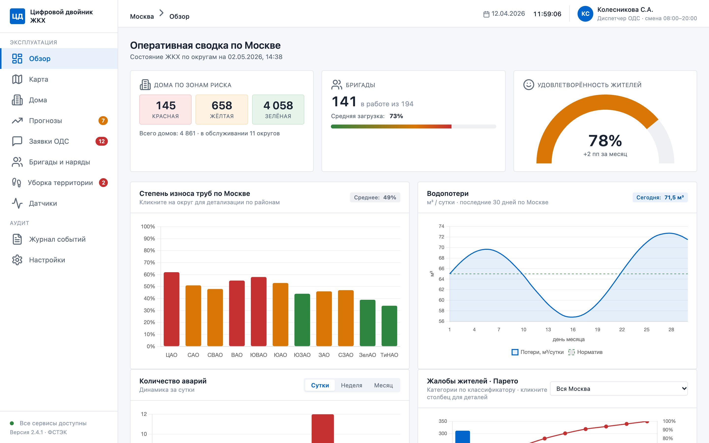
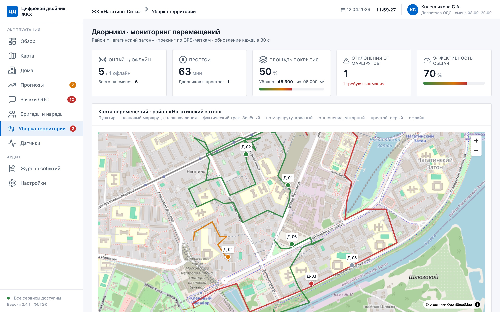
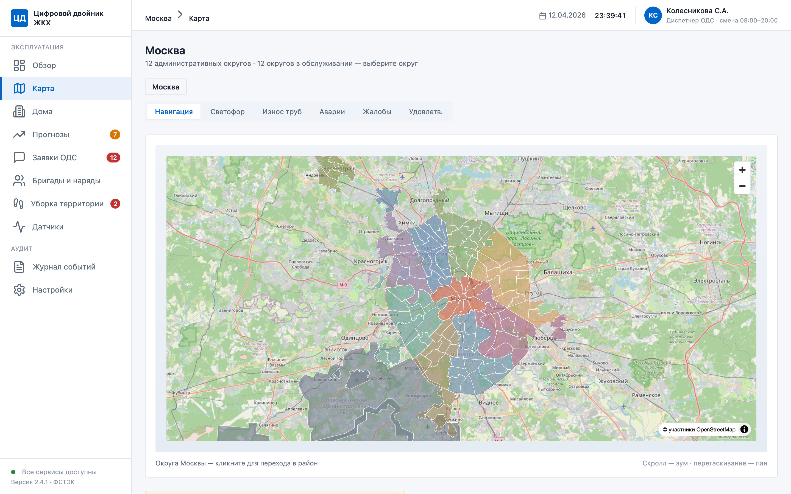
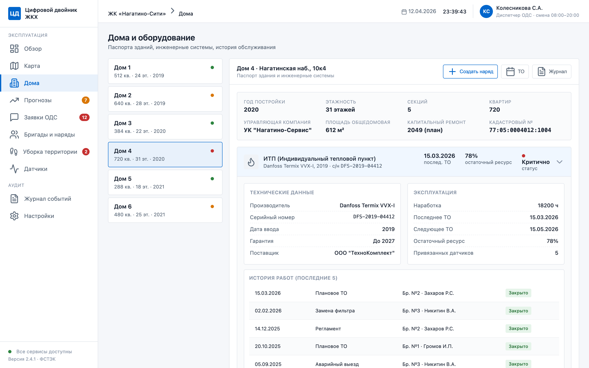
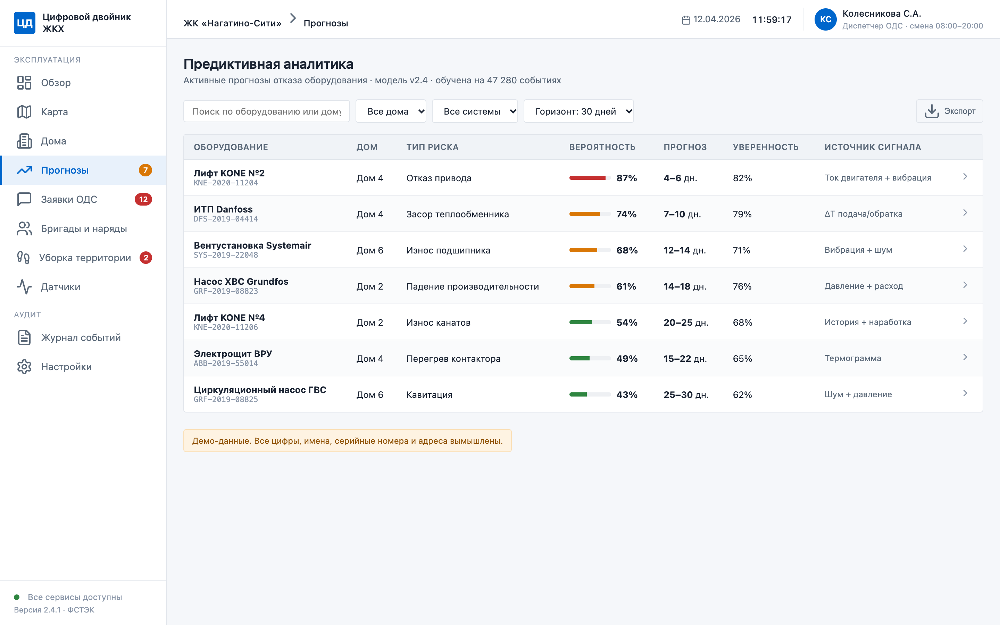
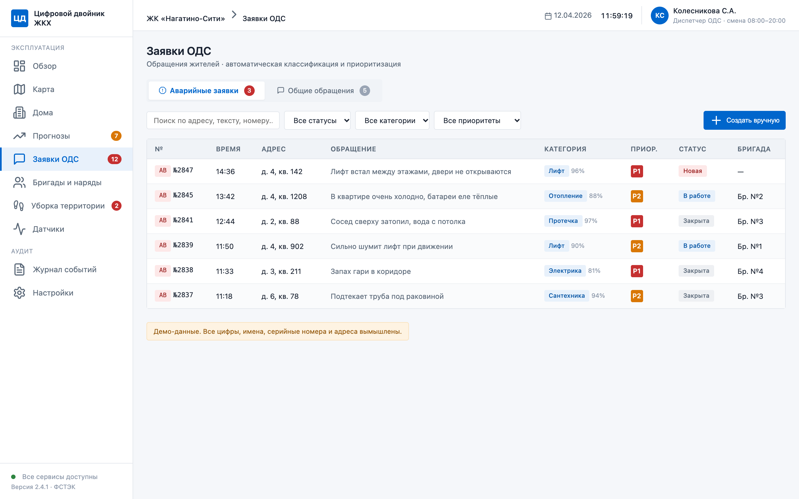
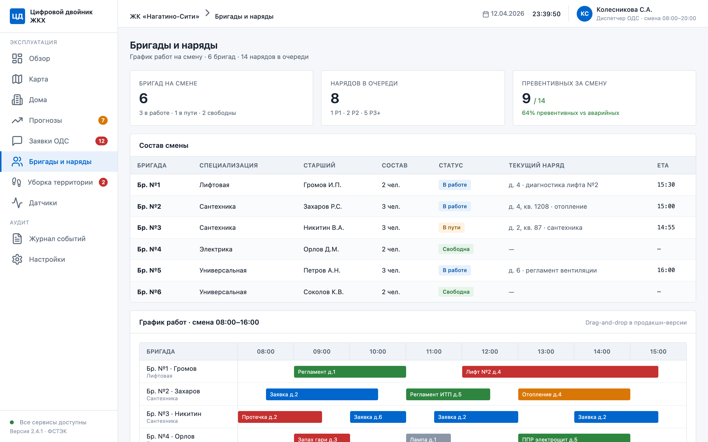

Портфолио-кейс: проработка нового продукта · Максим Поципух · Октябрь 2026
Цифровой двойник жилого фонда Москвы: от аварийного ремонта к прогнозу поломок
![Максим Поципух]()
Портфолио-кейс по проектированию продукта для московского ЖКХ по запросу Мосстратегии (Департамент экономической политики и развития города Москвы), апрель–май 2026 года. Автор — Максим Поципух. Прототип, сверка фактов и источники — в репозитории проекта.

Открыть прототипОт карты Москвы до карточки дома и прогноза отказа лифта. Все данные вымышлены.Перейти к прототипу →Предпосылки
В марте 2026 года правительство утвердило стратегическое направление цифровой трансформации ЖКХ до 2030 года. Мосстратегия (Департамент экономической политики и развития города Москвы) обратилась за проработкой проекта цифрового двойника жилого фонда, чтобы предложить его префектурам Москвы в целях реализации программы повышения производительности труда.
Я сформулировал продукт — платформу, которая собирает данные о домах в одну карточку, показывает состояние каждого дома «светофором» и прогнозирует отказы инженерных систем, — с помощью ИИ-агентов разработал кликабельный прототип. В июне 2026 года концепция была представлена в префектуры Москвы и Дирекцию ЖКХ.
Моя роль. Я вёл продуктовую часть проекта: исследование мирового и российского опыта, концепцию продукта, постановку задачи прогноза, метрики, прототип и стратегию защиты перед заказчиком. Архитектуру и оценку разработки обсуждал с экспертами в области ЖКХ и проектирования цифровых двойников.
- Заявки жителей и диспетчерских служб
- Паспорта домов и оборудования, капремонт
- Телеметрия: тепловые пункты, лифты, датчики
- Слои «Цифрового двойника Москвы»
- Карточка дома: системы, оборудование, история работ
- Светофор состояния
- Прогноз отказа с объяснением
- Превентивный наряд в один клик
- Диспетчер — что брать первым
- Инженер — что проверить на неделе
- Руководитель района — куда бригады и бюджет
- Город — капремонт и подрядчики
1. Город уже оцифрован, но всё ещё узнаёт об авариях ЖКХ от жителей
Жилой фонд Москвы — это более 30 тысяч многоквартирных домов, 295 млн м² жилья и более 117 тысяч лифтов, почти четверть всех лифтов России. Только в программу капремонта до 2044 года включено более 420 тысяч инженерных систем и элементов.
Источники: капремонт, mos.ru; Мосстат; лифты, mos.ru; Единый диспетчерский центр, mos.ru.
Москва оцифрована, пожалуй, лучше любого другого города в стране. С 2016 года работает Единый диспетчерский центр: через него прошло более 60 млн заявок, к нему подключено более тысячи диспетчерских служб, около 80% заявок выполняются в день подачи, а ИИ-ассистент обрабатывает до половины обращений. «Цифровой двойник Москвы» содержит более 9 тысяч аналитических слоёв. МОЭК в онлайн-режиме следит почти за 8 тысячами тепловых пунктов.
| Цифровой двойник Москвы | Единый диспетчерский центр | Диспетчеризация МОЭК | Наш продукт | |
|---|---|---|---|---|
| Видит инженерные системы внутри дома | нет | нет | частично — тепловые пункты | есть |
| Прогноз отказов до аварии | нет | нет | частично — раннее выявление нарушений | есть |
| Все системы дома в одной карточке | нет | нет | нет | есть |
| Заявки и обращения жителей | частично — работы ЖКХ на карте | есть | нет | есть — как сигнал о доме |
| Весь город | есть | есть | частично — ~8 тыс. тепловых пунктов | после масштабирования |
По открытым источникам: Цифровой двойник Москвы, 2023; Цифровой двойник Москвы, 2026; Единый диспетчерский центр, mos.ru; МОЭК.
Но оцифрован процесс реакции, а не состояние фонда. Город быстро чинит то, что уже сломалось, но по-прежнему узнаёт об авариях в ЖКХ от жителей. Узнать заранее, в каком доме на следующей неделе откажет насос или лифт, по этим данным нельзя: состояние оборудования, паспорта домов, история ремонтов и обращения живут в разных системах.
Статистику аварий город ведёт, но она привязана к заявкам, а не к конкретному насосу или лифту с его наработкой и историей ремонтов. По ней видно, где ломалось, но не видно, где сломается. Отсюда и формула проекта:
Москва умеет быстро чинить и устранять последствия аварий в ЖКХ. Следующий шаг — прогнозировать поломки. Для этого не нужно собирать данные с нуля: заявки, паспорта домов и история ремонтов уже есть. Их нужно связать на уровне дома — и показать на московских данных, насколько прогноз точнее правила, которым инженеры пользуются и так.
Поэтому продукт — не «ещё один двойник» и не «первый в России», а слой, который соединяет существующие системы на уровне конкретного дома: паспорт, состояние оборудования, история ремонтов и обращения жителей в одной карточке, и прогноз отказа там, где для него есть данные.
2. Для кого и какое решение меняется
У продукта два разных клиента. Покупает и внедряет его город — префектуры округов, которым Мосстратегия предлагала проект. Пользуются им каждый день диспетчеры, инженеры и руководители районных служб. Продукт, который нравится покупателю, но не меняет работу пользователя, в ЖКХ становится красивой картой на стене.
- Префектуры округов
- Мосстратегия — инициатор проекта
Нужна сводка по округу, отчётность, обоснование бюджета
- Диспетчеры ОДС
- Инженеры управляющих компаний
- Руководители районных служб
Нужен список «что делать сегодня» — иначе продукт не меняет ни одного наряда
| Кто | Какое решение принимает | Что болит сейчас (гипотеза) | Что даёт продукт |
|---|---|---|---|
| Диспетчер ОДС | Какую заявку брать первой, кого отправить | Поток обращений без приоритета, одна авария приходит десятком звонков | Заявки по категориям и срочности; связанные обращения сгруппированы |
| Инженер управляющей компании | Что проверить и заменить на этой неделе | Обслуживание по календарю, а не по состоянию; история ремонтов в бумагах | Оборудование с риском отказа и объяснением, откуда риск |
| Руководитель района | Куда направить бригады и бюджет | Видит только то, что уже сломалось | Карта домов по уровню риска, загрузка бригад, доля плановых работ |
| Префектура и город | Как оценить работу подрядчиков и распределить бюджет | Не видно, где и как убрана территория; нет единой картины состояния фонда | Мониторинг уборки территории; сводка по округу: риски, аварии, жалобы |
| Житель | Когда вернут воду и тепло | Не знает, что происходит с его домом | Статус работ по своему дому |
Боли в таблице — гипотезы, собранные по открытым источникам и опыту Мосстратегии, кроме одной: потребность префектур в контроле уборки я услышал от них напрямую (раздел 3). Проверка остальных с диспетчерами и инженерами одного района — часть нулевого этапа, до любой разработки.
Кого обслуживаем первым. Критерий выбора — где продукт меняет способ работы. Сводка для руководства не меняет ни одного наряда; ценность возникает, когда бригада едет к насосу до аварии, а не после. Поэтому первые пользователи — диспетчер и инженер, а экраны для префектуры строятся поверх их данных.
3. Что реально болит в префектурах?
Мы шли в префектуры с предложением перейти от реактивного ремонта к предиктивному. Разговор показал, что сейчас их потребность лежит в другом месте — в контроле уборки территории: где находятся дворники и уборочная техника, какая площадь действительно убрана, и возможность прикреплять фото участка до и после уборки.
Это не отменяет прогноз отказов, но меняет порядок. Контроль уборки — задача, которую префектура хочет решить сейчас, и её результат виден с первого дня: план и факт маршрута, простои и площадь покрытия не требуют многолетней истории отказов. Поэтому в прототип был добавлен раздел, моделирующий мониторинг уборки: GPS-треки дворников, плановый и фактический маршрут, отклонения, простои, площадь покрытия и эффективность по участкам. Учёт уборочной техники и фото до и после — следующие шаги этого модуля.

Раздел добавлен после разговоров с префектурами. Данные вымышлены.
Для платформы это хороший вход: те же карта, участки и объекты, на которых строится прогноз отказов, начинают работать на задаче, за которую заказчик готов взяться уже сейчас.
4. Разработка метрик успеха проекта
Главная метрика — доля превентивных работ: какая часть нарядов бригад выполнена по прогнозу или осмотру по состоянию, а не по аварийной заявке.
Доля превентивных работ
нарядов по прогнозу и плану, а не по аварии
на 1 000 квартир
на дом в месяц
по одной проблеме
не растёт
по ложным прогнозам — ниже порога
Определение события. Превентивный наряд — наряд, созданный до аварийной заявки по этой системе этого дома на основании прогноза или осмотра по состоянию. Плановое обслуживание по календарному графику считается отдельно: его продукт не меняет, и смешивать их — значит приписать себе чужую работу. Аварийный наряд — созданный по заявке жителя или диспетчера после отказа.
Как считаем с первого дня пилота. Из полей наряда: дом, система, дата создания и источник — прогноз, осмотр, календарный график или заявка. Эти поля уже есть в нарядах или добавляются одним справочником.
Почему эта метрика, а не «снижение аварийности». Аварийность зависит от погоды, возраста фонда и капремонта и меняется годами, а продукт за год пилота на неё повлиять почти не может. Доля превентивных работ зависит от одного — пользуются ли продуктом, — и меняется с первого месяца.
Под ней — метрики результата, которые важны городу: аварийные заявки на тысячу квартир, часы без тепла, воды и лифта, повторные обращения по одной проблеме. И ограничители, без которых главную метрику легко «улучшить» ценой вреда: время реакции на аварийные заявки не должно расти, а доля напрасных выездов по ложным прогнозам — выходить за согласованный порог.
5. Что прогнозирует продукт?
Для руководства прогноз описывается одной строкой: «предиктивная аналитика поломок, прогноз за 7–14 дней». Для команды, которая будет его строить, и для заказчика, который будет его принимать, этого мало.
Что предсказываем. Не «аварийность дома», а конкретное событие: аварийную заявку по определённой системе дома — отопление, водоснабжение, лифт, электрика — в заданном горизонте, например 14 или 30 дней. Событие либо случилось, либо нет, поэтому прогноз можно проверить.
На каких данных учимся. Метки — из истории заявок диспетчерских служб: в них есть адрес, тип неисправности (280 типов в Едином диспетчерском центре) и время. Признаки — паспорт дома и оборудования (год, тип, наработка, капремонт), история прошлых отказов, сезон и погода, а там, где есть, — телеметрия.
Холодный старт. Большая часть старого фонда не оснащена датчиками, поэтому первая версия — не нейросеть, а правила и простая модель на паспорте и истории заявок. Телеметрия добавляется там, где она уже есть: тепловые пункты МОЭК, лифты с диспетчеризацией, новые жилые комплексы.
С чем сравниваем. Модель имеет смысл, только если она лучше того, что инженер делает и так: правила «чем старше, тем опаснее». Ориентир — исследование прорывов водопровода в Сиракьюсе: модель нашла 62% прорывов в 1% самых рискованных участков, а выбор по возрасту труб — 10%. Ценность модели доказывает именно разрыв с простым правилом, а не абстрактный процент «снижения аварийности».
Независимое исследование города и Чикагского университета: Kumar et al., KDD 2018. Так выглядит доказательство ценности модели: разница с простым правилом, а не процент «снижения аварийности».
Как поймём, что работает. Три метрики, понятные заказчику:
- точность в начале списка — из 100 единиц оборудования с самым высоким риском сколько действительно отказали в горизонте прогноза: у бригады ограниченное время, и важны первые строки;
- полнота по критическим отказам — какую долю аварий, оставляющих дом без тепла, воды или лифта, модель предупредила заранее;
- время упреждения — за сколько дней до отказа появился сигнал: прогноз за день до аварии бригаде уже не помогает.
Человек в контуре. Модель не отправляет бригады сама: она предлагает инженеру список с объяснением, откуда риск, а инженер принимает или отклоняет прогноз. Каждое решение сохраняется — так модель учится, а у города остаётся понятная ответственность.
Ретроспективный тест: проверка до первого рубля на разработку
Сигнал в данных о поломках и ремонтах есть всегда — это подтверждает зарубежный опыт. Вопрос в другом: насколько прогноз на московских данных точнее правила, которым инженер пользуется и так, и для каких систем этого выигрыша хватает, чтобы перестроить работу бригад. Это проверяется до MVP.
идём в MVP с прогнозом
прогноз только для систем, где он заметен; для остальных — карточка дома и телеметрия
Разделение только по времени: случайное перемешивание лет «подсмотрит» будущее и завысит результат.
| Гипотеза | На истории московских заявок прогноз заметно точнее правила «по возрасту» — и понятно, для каких систем |
| Данные | Заявки одного района за 2–3 года: адрес, тип неисправности, время; паспорта домов и оборудования |
| Разделение | Обучение на прошлых годах, проверка на следующей зиме. Только по времени: случайное разделение подсмотрит будущее и завысит результат |
| С чем сравниваем | Правило «чем старше, тем опаснее» и случайный выбор |
| Метрика решения | Доля аварий проверочной зимы, попавших в верхние N% списка риска, против того же у правила по возрасту |
| Порог | Согласуется с заказчиком до теста. Мой ориентир — модель находит в верхних 10% списка хотя бы вдвое больше аварий, чем правило по возрасту |
| Если выигрыш мал | Прогноз строим только для систем, где он заметен. Для остальных — карточка дома и сбор телеметрии, а прогноз откладывается до появления датчиков |
| Стоимость | Около двух месяцев аналитика и доступ к данным — против 6–8 месяцев MVP |
Порог важнее модели: большинство проектов не говорят заранее, при каком результате они закрываются. Здесь это сказано до начала работы.
6. Пользовательский интерфейс прототипа
Прототип я сделал как инструмент обсуждения и защиты концепции перед заказчиком, а не как работающую систему: все данные в нём вымышлены. Он показывает три уровня приближения — город, округ и район, дом и единица оборудования — и путь каждого пользователя.
Все данные на скриншотах вымышлены — это прототип для обсуждения концепции, а не работающая система.

Границы районов — Code for Germany (MIT), подложка — © участники OpenStreetMap.
Карточка дома — паспорт здания, инженерные системы, оборудование с наработкой, датой последнего обслуживания и остаточным ресурсом, история работ. Это то, ради чего инженер откроет систему.

Прогнозы — оборудование с вероятностью отказа, горизонтом, уверенностью модели и источником сигнала, например «ток двигателя и вибрация» для лифта. Из прогноза одним действием создаётся превентивный наряд — тот самый, из которого считается главная метрика.

Заявки и бригады — обращения раскладываются по категориям и приоритетам, бригады планируются на смену с учётом специализации, доля превентивных нарядов считается в реальном времени.


Почему без 3D. Продукт называется цифровым двойником, но в MVP нет трёхмерных моделей зданий: карта, светофор и списки. 3D-модель дорога, красива на презентации и не меняет ни одного наряда. Решение инженера меняет список «что проверить на этой неделе», а не объёмный дом на экране.
7. Этапы внедрения и риски
Проект разбит на четыре этапа. Каждый заканчивается проверяемым результатом, и решение о следующем принимается только после демонстрации предыдущего.
Ромб — веха: решение о следующем этапе только после демонстрации результата предыдущего. Сроки этапов — 2–3, 6–8, 12–16 и 12–16 месяцев.
| Этап | Что делаем | Срок | Веха — что должно быть доказано |
|---|---|---|---|
| 0. Предпроектное исследование | Аудит данных, проверка гипотез с пользователями, ретроспективный тест, выбор пилотного жилого комплекса | 2–3 мес. | Прогноз на исторических данных заметно точнее правила «по возрасту»; история заявок с адресом и типом неисправности есть хотя бы за 2–3 года |
| 1. MVP — один жилой комплекс | Карта, светофор, карточки домов и оборудования, подключение датчиков | 6–8 мес. | Инженеры и диспетчеры пользуются системой каждый день |
| 2. Пилот — один район | Интеграция с диспетчерскими службами, прогнозная модель | 12–16 мес. | Модель лучше правила «по возрасту» в реальной работе; доля превентивных работ растёт |
| 3. Масштабирование | Все округа, автоматическое планирование бригад | 12–16 мес. | Эффект подтверждён на пилоте и окупает тиражирование |
Связь с «Цифровым двойником Москвы». Из трёх вариантов — отдельная платформа, слой внутри городского двойника или федерация — я рекомендовал федерацию: самостоятельная платформа, которая через API отдаёт свои данные слоем в городской двойник. Критерий — не зависеть от чужой технологической дорожной карты и при этом не дублировать городскую систему.
| Кто | Роль | Что ему нужно от проекта |
|---|---|---|
| Мосстратегия, Департамент экономической политики и развития | Инициатор и заказчик концепции | Проект, который можно предложить префектурам: проблема, нормативка, этапы |
| Префектуры округов | Покупатели и внедряющие | Сводка по округу, понятные вехи и модель финансирования превентивного ремонта |
| ДИТ Москвы | Оператор «Цифрового двойника Москвы» | Федерация: данные продукта — слоем в городской двойник |
| Диспетчерские службы, ГБУ «Жилищник», управляющие компании | Ежедневные пользователи — и те, чью работу продукт делает видимой | Прогноз встроен в привычный наряд; правила контроля согласованы до пилота |
| МОЭК, фонд капремонта | Владельцы данных о тепловых пунктах и ремонтах | Доступ к данным — условие этапа 0; нужен «внутренний чемпион» |
| Жители | Конечные выгодоприобретатели | Меньше отключений, статус работ по своему дому |
Риски.
| Риск | Что с ним делать |
|---|---|
| Данные разрознены и неполны: заявки без адресов или типов, паспорта устарели | Аудит данных и ретроспективный тест — нулевой этап, а не часть разработки |
| Выигрыш модели над простым правилом мал | Порог согласуется до теста; прогноз строится только для систем, где выигрыш есть |
| Исполнители видят в продукте контроль | Пилот вместе с пользователями; договорённость о правилах на уровне префектуры |
| Превентивный ремонт не из чего оплачивать | Модель финансирования — условие перед пилотом |
| Дублирование с городскими системами | Слой над ними и федерация с «Цифровым двойником Москвы» |
| Требования к защите информации | Жилищно-коммунальное хозяйство прямо не входит в сферы критической информационной инфраструктуры по 187-ФЗ, но данные теплоснабжения могут относиться к энергетике. Если продукт получает данные МОЭК, вопрос категорирования решается на нулевом этапе — от него зависят архитектура и сроки |
Другие кейсы автора
Источники
- Мосстат, «Москва в цифрах 2024», табл. 6.15 — площадь жилых помещений — ссылка
- mos.ru, программа капитального ремонта 2015–2044 — ссылка
- mos.ru, замена лифтов в жилых домах — ссылка
- mos.ru, Единый диспетчерский центр, 06.09.2026 — ссылка
- Распоряжение Правительства РФ от 02.03.2026 № 398-р — ссылка
- mos.ru, «Цифровой двойник Москвы», 07.07.2023 — ссылка
- mos.ru, цифровой двойник Москвы, 21.07.2026 — ссылка
- МОЭК, предотвращённые технологические нарушения, 2024 — ссылка
- government.ru, рейтинг цифровой трансформации регионов за 2025 год — ссылка
- GovTech Singapore, «5 things to know about Virtual Singapore» — ссылка
- Город Хельсинки, отчёт о пилоте цифрового двойника Калатасамы, 2019 — ссылка
- Centre for Digital Built Britain, National Digital Twin Programme — ссылка
- Kumar et al., «Using Machine Learning to Assess the Risk of and Prevent Water Main Breaks», KDD 2018 — ссылка
- Федеральный закон от 26.07.2017 № 187-ФЗ «О безопасности критической информационной инфраструктуры», ст. 2, п. 8 (ред. 07.04.2025) — ссылка
Полная сверка исходных материалов проекта с первоисточниками — в research/. Происхождение библиотек и карты в прототипе — в demo/README.md.